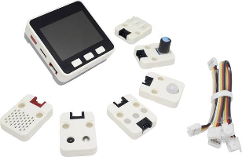

Package RUStack5

What is RUStack5?
RUStack5 is a Python interface package for communicating with the M5Stack through a set of easy to use wrapper functions. To get an idea of its implementation, here's some sample code:
import RUStack5 # import the library.
mystack=RUStack5.Devices.M5Stack() # create the M5Stack object.
mystack.autoconnect() # connect to the device.
imu=RUStack5.Internals.IMU(mystack) # create IMU object, parent=mystack.
print(imu.accX) # print x component of the acceleration vector.
mystack.disconnect()
Installation
To use the package, its location has to be added to the PYTHONPATH. In the following examples the library files are located on user "Bill"'s desktop in the folder RUStack5:
In pyzo, : Shell -> Edit shell configurations -> pythonPath -> Set the path to C:\Users\Bill\Desktop\RUStack5\
In Spyder: Tools -> PYTHONPATH manager -> Add Path -> Locate the RUStack5 folder on the desktop -> Click Choose
Usage
To use RUStack5, an object representing the device has to be created:
mystack=RUStack5.Devices.M5Stack()
To connect to the physical device use:
mystack.autoconnect()
M5Stack Units can be added like this:
mysensor=RUStack5.Units.TOF(mystack) # create an interface for the TOF Unit
For a list of available units and other peripherals, click on Custom, Internals, Modules or Units on the left side of this page.
Data can be acquired using the methods and attributes of the Unit objects e.g:
print(mysensor.get_distance())
To use the internal peripherals of the M5Stack like the IMU, use the Internals class:
myIMU=RUStack5.Internals.IMU(mystack)
print(myIMU.accX) # the measured X component of the accelerometer vector
To use M5Stack modules, use RUStack.Modules:
servo=RUStack5.Modules.SERVO(mystack)
servo.set_angle(1,90) # set servo 1 angle to 90 degrees
Hubs
Sensors behind a PaHUB can be accessed by setting the Hub to a specific port before invoking the methods of a sensor's class:
hub=RUStack5.Hubs.PaHUB()
tof=RUStack5.Unit.TOF(mystack)
hub.set_port(1)
print("Tof 1 distance:")
print(tof.distance)
hub.set_port(2)
print("Tof 2 distance:")
print(tof.distance)
Using Multiple M5Stacks At The Same Time
It's possible to use multiple M5Stacks connected to the same computer. However in this case the autoconnect method cannot be used. Use connect() instead and explicitly specify the serial port name:
first_stack=RUStack5.Devices.M5Stack()
second_stack=RUStack5.Devices.M5Stack()
first_stack.connect("COM1")
second_stack.connect("COM2")
Extended Help
Click on the class definitions on the left to view more detailed information about methods and/or attributes of supported Units/Modules/Internals.
Copyright
RUStack5 is (C) Radboud University Nijmegen.
Sub-modules
RUStack5.Custom-

This class supports third party sensors connected to the General Purpose I/O (GPIO) pins on the M5Stack.
RUStack5.Devices-

This module contains objects representing physical devices. At this point only the …
RUStack5.Hubs-
Support for direct control of both M5Stack Hubs
RUStack5.Internals-

The M5Stack grey contains several internal peripherals, like an accelerometer, gyroscope, etc. They …
RUStack5.Modules-

Modules can be added as additional layers in the M5Stack. They are supported through the methods in this class.
RUStack5.ToolsRUStack5.Units-

Units can be connected to the M5Stack using a grove cable, either directly or through a hub.